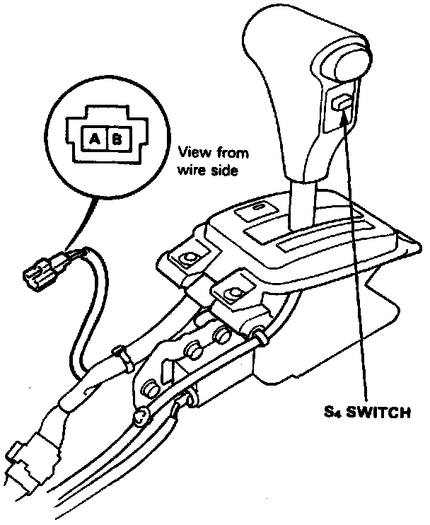

Transmission Mode Switch: Testing and Inspection

S4 Switch Test
1. Remove the front console.
2. Disconnect the switch connector.
3. Check for continuity between A and B terminals. There should be continuity when the switch is pressed.
